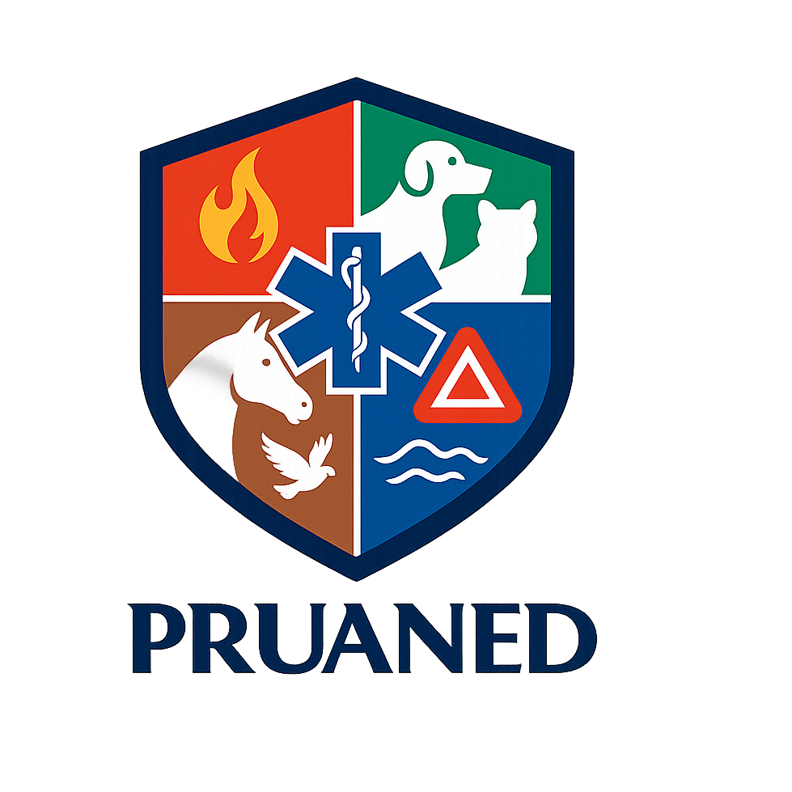

Artículo 1°. Denominación. Constituyese una asociación gremial denominada “Asociación Gremial Profesionales Unidos por los Animales en Emergencias y Desastres”, pudiendo usar indistintamente ante cualquier autoridad y ante cualquier persona jurídica o natural la sigla “PRUANED A.G”, regida por el Decreto Ley N° 2.757 de 1979, sus reglamentos y las demás normas que le sean aplicables, así como por los presentes Estatutos y sus Reglamentos internos.
Artículo 2°. PRUANED A.G es una entidad gremial, interdisciplinaria, técnica y profesional, de derecho privado, sin fines de lucro, independiente de toda actividad político-partidista o religiosa y enfocado al desarrollo social.
Se inspira en los principios de One Health y One Welfare, reconociendo la interdependencia entre la salud humana, animal y medio ambiental, alineándose con el Marco de Sendai 2015–2030, con los objetivos de desarrollo sostenible (ODS) y la Política Nacional para la Reducción del Riesgo de Desastres.
La Asociación fomentará la colaboración con organismos públicos, privados, académicos y comunitarios vinculados a la gestión y reducción del riesgo de desastres con componente animal.
Artículo 3°. Personalidad y patrimonio. La Asociación goza de personalidad jurídica y patrimonio propio, pudiendo adquirir, conservar y enajenar bienes de toda clase, a cualquier título, de conformidad con la normativa vigente.
Artículo 4°. Domicilio. El domicilio legal de la Asociación será Avenida Andes N°338, comuna San Fabián de Alico, Región de Ñuble, Chile, pudiendo modificarse por acuerdo del Directorio Nacional.
Sin perjuicio de ello, podrá establecer filiales, oficinas regionales o representaciones en cualquier localidad del país.
Artículo 5°. Duración. La duración de la Asociación será indefinida, mientras subsistan sus fines.
Artículo 6°. Objeto. PRUANED A.G tiene por objeto agrupar a profesionales, técnicos y personal operativo capacitado vinculados a la Gestión Integral del Riesgo de Desastres (GIRD) con enfoque en la dimensión animal, promoviendo su inclusión transversal en todas las fases del ciclo del riesgo: mitigación, preparación, respuesta y recuperación, así como en la educación y participación comunitaria.
Artículo 7°. Fines específicos. Son fines de PRUANED A.G:
Artículo 8°. Principios rectores. La Asociación adhiere a los principios de legalidad, probidad, transparencia, solidaridad, no discriminación, respeto por los pueblos originarios, derechos humanos, precaución, sostenibilidad ambiental, bienestar integral, autocuidado y trabajo interdisciplinario.
Artículo 8 bis. La Asociación contará con una estructura de carácter administrativo-directivo y una estructura técnico-operativa, ambas complementarias para el cumplimiento de sus fines institucionales.
Artículo 9°. Categorías. Podrán incorporarse personas naturales o jurídicas que ejerzan profesión, oficio o labor afín al objeto de la Asociación.
La Asociación podrá contar con voluntarios, profesionales, técnicos, brigadistas, colaboradores y personal operativo destinado al cumplimiento de sus fines institucionales.
La organización podrá establecer mecanismos de:reclutamiento - formación - convenios - capacitación - acreditación interna - certificación - evaluación de competencias credenciales operativas
El Directorio podrá establecer requisitos mínimos de ingreso, permanencia y participación en operaciones de emergencia.
Se establecen las siguientes categorías:
El Directorio Nacional mantendrá un registro actualizado de las categorías y sus respectivos derechos y deberes.
Artículo 10°. Requisitos de ingreso. La incorporación requerirá solicitud escrita o electrónica, acreditación de competencias, aceptación de estatutos y reglamentos, y acuerdo del Directorio. Los voluntarios permanentes deberán aprobar inducción y acreditar formación básica en seguridad y primeros auxilios veterinarios; los voluntarios espontáneos cumplirán inducción abreviada.
Artículo 11°. Derechos. Son derechos: participar en actividades y programas; acceder a información y capacitación; postular a cargos (según categoría); votar (si corresponde); y recibir acreditación y apoyo institucional en terreno.
Artículo 12°. Deberes. Son deberes de los socios y voluntarios:
Los asociados deberán mantener una participación activa y responsable en las actividades formales convocadas por la Asociación, incluyendo asambleas, reuniones ordinarias, reuniones extraordinarias, capacitaciones obligatorias y otras instancias definidas por el Directorio.
Se considerará incumplimiento grave la inasistencia injustificada reiterada a reuniones oficialmente convocadas.
Se entenderá como inasistencia reiterada:
El asociado por medio digital, electrónico o escrito deberá comunicar su imposibilidad de asistir.
Ante incumplimiento reiterado, el Directorio podrá aplicar progresivamente las siguientes medidas: amonestación verbal, amonestación escrita, suspensión temporal de derechos como asociado, pérdida de cargos internos o funciones operativas.
Todo procedimiento deberá garantizar el derecho del asociado a presentar sus descargos.
La conducta ética será supervisada por un Comité de Ética, órgano asesor del Directorio, encargado de conocer y resolver situaciones de naturaleza ética o disciplinaria, conforme al reglamento interno.
Artículo 13°. Padrón y protección de datos. La Secretaría llevará registro actualizado de socios y voluntarios, resguardando la confidencialidad y tratamiento de datos de acuerdo con la ley. Se podrán emitir credenciales físicas o digitales.
Artículo 14°. Suspensión y pérdida de la calidad de socio/voluntario. Procederá por renuncia, fallecimiento, mora grave, incumplimiento ético o disciplinario, acciones que atenten contra la organización y sus objetivos, asumir roles no asignados o por acuerdo fundado de la Asamblea, garantizando debido proceso y derecho a defensa. El Comité de Ética podrá emitir informes o recomendaciones previas a la decisión del Directorio o la Asamblea, según la gravedad del caso.
Artículo 15°. Órganos. Son órganos de PRUANED A.G: a) la Asamblea General; b) el Directorio Nacional; c) las Direcciones Técnicas y Temáticas; y d) la Comisión Revisora de Cuentas. El Consejo Asesor Técnico no formará parte de la estructura orgánica.
Artículo 16°. Reglas comunes. Todos los órganos deberán actuar con sujeción a los Estatutos, reglamentos y acuerdos de la Asamblea; llevarán actas de sus sesiones; y se regirán por principios de probidad y transparencia.
Artículo 17°. Integración y funciones. La Asamblea General es el órgano supremo, integrada por los socios activos. Son sus atribuciones: elegir y remover al Directorio; aprobar memoria y balance; fijar cuotas; aprobar modificaciones estatutarias; autorizar actos o contratos de especial relevancia; y resolver asuntos de alta importancia institucional.
Artículo 18°. Sesiones y periodicidad. La Asamblea se reunirá en sesiones ordinarias al menos dos veces al año y en sesiones extraordinarias cuando lo requiera el Directorio o un tercio de los socios activos. Podrá sesionar y votar por medios electrónicos que aseguren identidad y simultaneidad.
Artículo 19°. Convocatoria y quórum. La citación se realizará con al menos diez días corridos de anticipación, por medios físicos, electrónicos y/o por canales oficiales de comunicación.
El quórum para sesionar será de la mitad más uno (50% + 1) de los socios activos en primera citación, y los presentes en segunda citación.
Se podrán realizar asambleas extraordinarias de emergencia con citación de al menos 24 horas de anticipación.
Los acuerdos se adoptarán por mayoría simple, salvo materias que exijan quórum especial.
Artículo 20°. Modificaciones estatutarias y disolución. Las reformas estatutarias requerirán el voto favorable de dos tercios de los socios activos presentes. La disolución se resolverá conforme a lo establecido en el Capítulo X.
Artículo 21°. Actas. De toda sesión se levantará acta por el Secretario, la que consignará asistentes, acuerdos, votos y disidencias; será aprobada y firmada por el Presidente y el Secretario.
Artículo 22°. Integración y período. El Directorio Nacional estará compuesto por un Presidente, un Vicepresidente, un Secretario y un Tesorero. Durarán cuatro (4) años en sus cargos y podrán ser reelectos por una sola vez consecutiva.
Artículo 23°. Requisitos e inhabilidades. Para integrar el Directorio se requerirá ser socio activo y no encontrarse inhabilitado por sentencia o sanción disciplinaria.
Durante los primeros cinco años de funcionamiento de PRUANED A.G, no será exigible antigüedad mínima para integrar el Directorio.
Transcurrido dicho período, la Asamblea General o el reglamento interno podrá establecer requisitos de antigüedad para determinados cargos directivos.
Artículo 24°. Sesiones y quórum. El Directorio sesionará ordinariamente una vez al mes y extraordinariamente cuando lo convoque el Presidente o dos de sus miembros. El quórum será de tres directores; los acuerdos se adoptarán por mayoría simple; en caso de empate decidirá el voto del Presidente.
Artículo 25°. Funciones del Directorio. Corresponde al Directorio: ejecutar los acuerdos de la Asamblea; dirigir la administración; aprobar planes anuales, presupuestos y estados financieros; supervisar las Direcciones Técnicas; designar o remover directores de área y subcoordinadores; dictar reglamentos internos; y desarrollar funciones de planificación y respuesta en RRD y GRD, coordinando con autoridades competentes.
Artículo 26°. Presidente. Son funciones del Presidente: representar judicial y extrajudicialmente a PRUANED A.G; convocar y presidir la Asamblea y el Directorio; firmar contratos y convenios previa aprobación; velar por el cumplimiento de estatutos y protocolos; y liderar la coordinación estratégica en emergencias.
Artículo 27°. Vicepresidente. Son funciones del Vicepresidente: subrogar al Presidente en caso de ausencia; coordinar relaciones institucionales y alianzas; supervisar la ejecución de proyectos y apoyar la articulación de las Direcciones Técnicas y socios. Apoyar la conducción estratégica de la Asociación.
Artículo 28°. Secretario. Son funciones del Secretario: llevar el registro de socios y voluntarios; custodiar libros y documentación; redactar y autorizar actas; cursar citaciones; custodiar archivos digitales; y gestionar la transparencia documental interna.
Artículo 29°. Tesorero. Son funciones del Tesorero: administrar los recursos; llevar contabilidad y estados financieros; proponer el presupuesto anual; supervisar la correcta canalización de donaciones vía ONG donataria con convenio vigente; rendir cuentas trimestrales al Directorio y anuales a la Asamblea; y proponer políticas de adquisiciones y control interno.
Artículo 30°. Vacancias, subrogaciones y remoción. La vacancia por renuncia, fallecimiento, remoción o inasistencia reiterada será provista por la Asamblea en sesión extraordinaria dentro de 30 días. El Vicepresidente subrogará al Presidente; a falta de éste, lo hará el Secretario y luego el Tesorero. La remoción de directores procederá por incumplimiento grave, con debido proceso y mayoría absoluta de la Asamblea.
Artículo 31°. Estructura y designación. Existirán las siguientes Direcciones: (1) Voluntariado; (2) One Health; (3) RRD–GRD; (4) Pueblos Originarios; (5) Alianzas, Convenios y Donaciones; (6) Mascota;(7) Animales de Producción (ganado, aves, abejas); y (8) Fauna Silvestre. Cada Dirección contará con un Director y un Subcoordinador, designados por el Directorio por períodos de dos años, renovables.
Artículo 32°. Reglas comunes. Las Direcciones elaborarán planes anuales de trabajo con metas, indicadores y presupuesto estimado; reportarán trimestralmente al Directorio; coordinarán entre sí y con autoridades; y deberán ajustar su actuación a protocolos vigentes.
Artículo 33°. Dirección de Voluntariado. Objetivo: gestionar el ciclo completo del voluntariado permanente y espontáneo. Funciones: reclutamiento, inducción, acreditación, bienestar y seguridad; plan de formación; base de datos nacional; asignación a operativos; seguimiento psicosocial; control de uso de credenciales e imagen institucional; y evaluación post evento.
Artículo 34°. Dirección One Health. Objetivo: integrar salud animal, humana y ambiental en políticas, programas y operativos. Funciones: coordinación con instituciones de salud pública y medio ambiente; vigilancia y prevención de zoonosis; protocolos de bioseguridad; educación sanitaria; e investigación interdisciplinaria aplicada.
Artículo 35°. Dirección RRD–GRD. Objetivo: planificar y ejecutar medidas de reducción del riesgo y respuesta ante desastres. Funciones: análisis de riesgo; mapas de amenaza y exposición animal; protocolos operativos; coordinación con SENAPRED, SAG, municipios y cuerpos de emergencia; mando y control durante operativos; evaluación de daños y necesidades; y lecciones aprendidas.
Artículo 36°. Dirección de Pueblos Originarios. Objetivo: incorporar saberes, cosmovisiones y prácticas territoriales. Funciones: vinculación con comunidades indígenas; enfoque intercultural en protocolos; consulta y participación; y pertinencia cultural en albergues y operativos.
Artículo 37°. Dirección de Alianzas, Convenios y Donaciones. Objetivo: fortalecer cooperación y financiamiento. Funciones: gestión de convenios; articulación con ONG donataria con convenio vigente; búsqueda de fondos; administración documental de donaciones; y rendición pública coordinada con Tesorería.
Artículo 38°. Dirección de Mascotas. Objetivo: protección de animales de compañía. Funciones: rescate, atención primaria, reunificación, albergues temporales, protocolos de tenencia responsable, y capacitación comunitaria.
Artículo 39°. Dirección de Animales de Producción. Objetivo: continuidad productiva y bienestar animal en emergencias. Funciones: planes de contingencia alimentaria e hídrica; coordinación con servicios agropecuarios; protocolos para ganado, aves y abejas; y asesoría a productores para mitigación y recuperación.
Artículo 40°. Dirección de Fauna Silvestre. Objetivo: rescate, rehabilitación y liberación segura de fauna afectada. Funciones: coordinación con centros de rehabilitación; protocolos de captura y traslado; monitoreo post-evento; y educación para la conservación.
Artículo 41°. Comisiones y grupos de trabajo. Cada Dirección podrá proponer comisiones temáticas o territoriales ad hoc, aprobadas por el Directorio, con objetivos, plazos y productos definidos.
Artículo 42°. Patrimonio. El patrimonio se conforma por cuotas de socios, aportes voluntarios, donaciones, legados, subvenciones, ingresos por actividades y todo otro ingreso lícito compatible con su naturaleza no lucrativa. Los socios podrán elevar una solicitud al directorio nacional para la suspensión temporal de las cuotas de socio de manera justifica y por un periodo de tiempo definido sin perjudicar que este pueda ser extendido en el tiempo si el socio lo solicita.
Artículo 43°. Administración financiera. La Tesorería llevará contabilidad fidedigna; cuentas bancarias a nombre de PRUANED A.G; presupuesto anual; y políticas de adquisiciones y caja chica. Todo egreso requerirá respaldo y doble firma o firma electrónica avanzada (Presidente y Tesorero o quien designe el directorio).
Artículo 44°. Donaciones con beneficio tributario. Las donaciones que otorguen beneficios tributarios serán canalizadas exclusivamente a través de organizaciones sin fines de lucro donatarias con convenio vigente con la Asociación, y transferirá recursos conforme a los fines aprobados. Asimismo, podrá recibir cuotas y aportes directos sin beneficio tributario.
Artículo 45°. Rendición y publicidad activa. La Tesorería presentará estados financieros trimestrales al Directorio y balance anual a la Asamblea. Se publicará un informe resumido anual para los socios en el sitio o medios institucionales.
Artículo 46°. Prevención de conflictos de interés. Todo director, socio o miembro que tenga interés personal, en un contrato, donación, convenio o cualquier otro acto que involucre recursos o beneficios institucionales, deberá informar dicha situación e inhabilitarse de la discusión y votación correspondiente, dejándose constancia en acta.
El incumplimiento de esta obligación será considerado falta grave y podrá ser sancionado según el reglamento interno.
Artículo 47°. Auditoría y control. La Comisión Revisora de Cuentas ejercerá control interno y podrá recomendar auditorías externas independientes.
Artículo 48°. Integración y período. La Comisión Revisora de Cuentas estará compuesta por tres socios activos, elegidos por la Asamblea por un período de dos años, pudiendo ser reelegidos alternadamente. No podrán integrar el Directorio ni tener cargos remunerados en la Asociación.
Artículo 49°. Funciones. Revisar trimestralmente la documentación contable; emitir informes semestrales al Directorio y un informe anual a la Asamblea; verificar cumplimiento de políticas financieras; proponer mejoras de control interno; y requerir antecedentes a Tesorería.
Artículo 50°. Facultades y acceso a información. Tendrá acceso a libros y respaldos contables, contratos y convenios, resguardando la confidencialidad de datos personales y sensibles.
Artículo 51°. Remoción y vacancias. Sus miembros podrán ser removidos por causa justificada por la Asamblea. Las vacancias se proveerán en sesión extraordinaria.
Artículo 52°. Comité Electoral. Para cada elección de Directorio se conformará un Comité Electoral de tres miembros designados por la Asamblea, responsables de proponer calendario, velar por la publicidad, resolver reclamaciones y escrutar votos.
Artículo 53°. Elecciones y período. Las elecciones se efectuarán cada cuatro (4) años mediante votación secreta, personal e intransferible, presencial o por medios electrónicos seguros. Los directores podrán ser reelectos por una sola vez consecutiva.
Artículo 54°. Candidaturas y propaganda. Las candidaturas se declararán por escrito ante el Comité Electoral con al menos 20 días de anticipación. La propaganda deberá respetar principios éticos y no podrá comprometer recursos de la Asociación.
Artículo 55°. Escrutinio y proclamación. Terminado el acto electoral, el Comité realizará escrutinio público, levantará acta y proclamará al Directorio electo.
Artículo 56°. Vacancias y subrogaciones. Las vacancias del Directorio se proveerán conforme al artículo 30. El Directorio podrá designar subrogancias temporales hasta la ratificación por la Asamblea.
Artículo 57°. Reformas de estatutos. Las reformas requerirán acuerdo de Asamblea Extraordinaria con el voto favorable de dos tercios de los socios activos presentes; deberán depositarse e inscribirse conforme a derecho.
Artículo 58°. Disolución. La disolución será acordada por Asamblea Extraordinaria con el mismo quórum de reforma. Los bienes se destinarán a una entidad sin fines de lucro con fines similares, designada por la Asamblea.
Artículo 59°. Norma supletoria y vigencia. En lo no previsto, regirá el Decreto Ley N° 2.757 de 1979 y la normativa complementaria aplicable. Estos Estatutos entrarán en vigencia desde su aprobación por la Asamblea Constitutiva y su depósito e inscripción correspondientes.
Artículo 60°. Naturaleza. El voluntariado constituye el cuerpo operativo esencial de PRUANED A.G, integrado por personas que, en forma libre y solidaria, contribuyen a las actividades de prevención, preparación, respuesta y recuperación en emergencias y desastres que afectan a los animales. Sólo podrán participar en operaciones de respuesta quienes cumplan los estándares técnicos.
Artículo 61°. Categorías. Se reconocen dos modalidades: a) Voluntarios Permanentes: inscritos, acreditados y capacitados regularmente, con derechos y deberes plenos; y b) Voluntarios Espontáneos: personas que, en situaciones de emergencia, se incorporan temporalmente bajo inducción abreviada.
Artículo 62°. Derechos. Son derechos de los voluntarios: recibir inducción, capacitación y acreditación; ser informados de riesgos y protocolos; participar en actividades de formación; y recibir diploma de participación.
Artículo 63°. Deberes. Son deberes: respetar la autoridad de mandos designados; cumplir normas de seguridad y bioseguridad; portar credencial y uniforme cuando corresponda; mantener conducta ética; y abstenerse de representar públicamente a PRUANED A.G, sin autorización.
Artículo 64°. Ingreso y acreditación. El ingreso de voluntarios permanentes requerirá solicitud, entrevista, capacitación básica y firma de compromiso. Los voluntarios espontáneos deberán registrar sus datos y aprobar inducción abreviada antes de integrarse a operativos.
Artículo 65°. Inducción y formación. Sujeto siempre a la disponibilidad presupuestaria y operativa de la organización, los voluntarios deberán aprobar cursos de inducción en ética, seguridad, GRD y bienestar animal. Se establecerán niveles de acreditación progresiva según experiencia.
Artículo 66°. Uniforme e insignias. El uso de uniforme e insignias institucionales será regulado por el Directorio y su indebido uso será sancionado disciplinariamente.
Artículo 67°. Bienestar y apoyo. La Asociación velará, en la medida de sus posibilidades, por un entorno seguro para sus voluntarios. En caso de eventos complejos, la asociación podrá orientar, facilitar o derivar a los voluntarios a redes de apoyo psicosocial externas, quedando la Asociación exenta de costos económicos directos derivados de tratamientos médicos o terapéuticos individuales.
Artículo 68°. Régimen disciplinario. Las faltas se clasificarán en leves, graves y muy graves, conforme al reglamento interno:
El procedimiento disciplinario asegurará derecho a defensa, instancia de apelación y registro en acta.
Las decisiones serán revisadas por el Comité de Ética, que actuará como instancia técnica de evaluación y asesoría al Directorio.
Artículo 69°. Reconocimiento. La Asociación establecerá mecanismos de reconocimiento y certificación pública de sus voluntarios destacados, fomentando la permanencia y profesionalización del voluntariado.
Artículo 70°. Niveles de actuación. La estructura operativa de PRUANED A.G, se organizará en tres niveles: a) Nivel Estratégico: Asamblea General y Directorio Nacional, responsables de políticas, planificación y vínculos interinstitucionales; b) Nivel Táctico: Direcciones Técnicas, responsables de planificación sectorial, coordinación regional y supervisión de equipos; c) Nivel Operativo: voluntarios permanentes y espontáneos, desplegados en terreno para la ejecución de acciones directas.
Artículo 71°. Jerarquía funcional. Durante emergencias, la cadena de mando será: Presidente → Directorio Nacional → Direcciones Técnicas → Coordinadores de Operativo → Voluntarios. Esta jerarquía podrá adaptarse según la naturaleza y magnitud del evento.
En situaciones de emergencia o fuerza mayor declaradas por el Directorio, se suspenderá la estructura lineal de mando único, activándose un régimen de facultades distribuidas y delegación de firma ejecutiva entre los miembros del Directorio para garantizar la representación y defensa del gremio de forma oportuna.
Artículo 72°. Coordinación institucional. La Asociación coordinará su actuación con el SENAPRED, el SAG, municipios, servicios públicos pertinentes, universidades y ONG afines. Los convenios formales definirán responsabilidades, protocolos y estándares de actuación conjunta.
Artículo 73°. Protocolos de actuación. Se elaborarán manuales y procedimientos para la gestión interinstitucional, interoperabilidad en terreno, comunicación y logística. Dichos documentos serán actualizados periódicamente con base en lecciones aprendidas y normativa vigente.
Artículo 74°. Transparencia y rendición de cuentas. Toda coordinación externa deberá quedar registrada en informes técnicos, disponibles para socios y autoridades competentes. Se fomentará la transparencia como principio transversal en todas las relaciones interinstitucionales.
Artículo 75°. En caso de emergencia, desastre, catástrofe, crisis sanitaria, contingencia ambiental o cualquier evento que requiera respuesta inmediata relacionada con animales, salud pública veterinaria o gestión del riesgo, el Directorio podrá declarar estado operativo extraordinario institucional.
Bajo esta condición, la Asociación podrá:
Estas acciones deberán ser coordinadas con el Directorio y registradas administrativamente para fines de control interno y transparencia institucional.